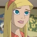
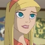

Aqui se encontrara información referente a la seria animada de The Spectacular Spiderman
Año de estreno: Marzo del 2008
País de origen: Estados Unidos
Géneros: Serie animada
Creadores: Stan Lee
The Spectacular Spiderman o El espectacular Spiderman en español es una serie animada que consta de dos temporadas con 13 episodios cada temporadas que adapta los comics de Marvel que llevan el mismo nombre, La serie cuenta la historia de Peter Parker, un adolescente de 16 años que sufre la picadura de una araña que lo modifica geneticamente dandole los poderes de una araña, llevandolo a convertirse en un super heroe y enfrentarse a los 6 Siniestros.
| Nombre | Foto | Rol |
|---|---|---|
| Peter Parker / Hombre Araña |   |
Personaje principal de la serie, es en quien se centra la serie por completo contando su historia de como es que un adolescente de 16 años lleva una vida normal de estudiante y una vida de super heroe al mismo tiempo. |
| Gwen Stacy |    |
La mejor amiga y apoyo de Peter Parker, principalmente se centra en apoyar a Peter en sus estudios pero tambien ser una de las principales en apoyar al Hombre Araña a derrotar a sus enemigos observandolos y destacando sus puntos debiles, aparte de ser un alivio comico para la serie. |
| Duende Verde |  |
Antagonista principal del Hombre Araña, aunque haya más antagonistas este es el que mas destaca porque es el que mas sale en la serie y es el que mas problemas da durante toda la serie volviendolo uno de los villanos principales y de los cuales se sabe muy poco ya que sale bastante en la serie pero no cuentan mucho de el. |
| Eddie Brock / Venom |   |
Antagonista principal en los tramos finales de la serie, sustituyendo al duende verde por un tiempo, tomando el papel de uno de los mejores amigos de Peter Parker convirtiendose en un villano sabiendo su identidad como hombre araña y haciendo lo posible por desvelar su identidad al publico para volverlo a el y a sus seres queridos un blanco metiendose con su vida privada. |